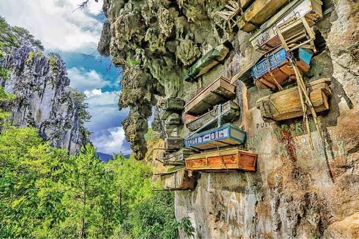
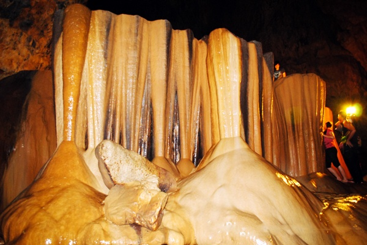
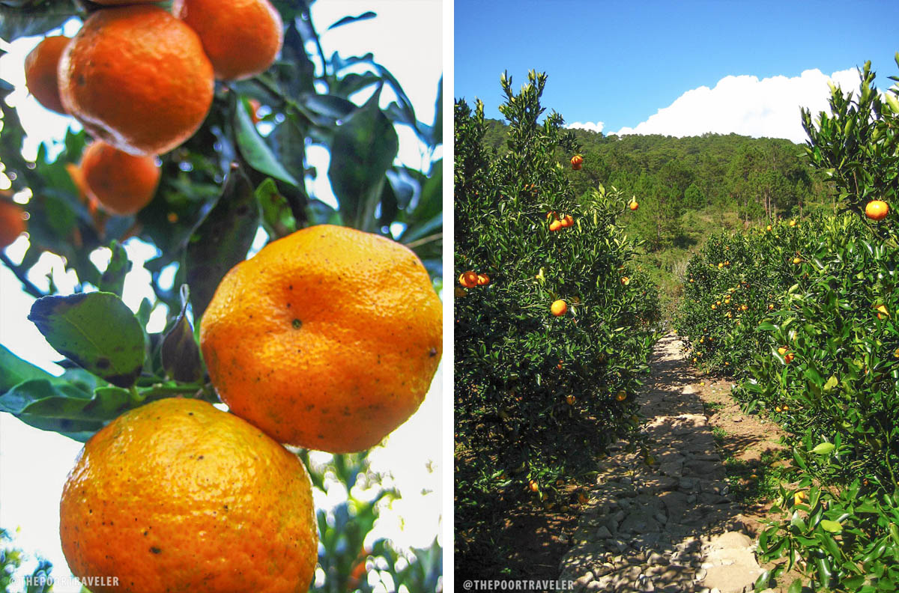
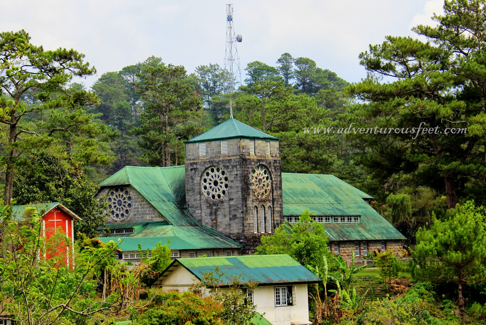
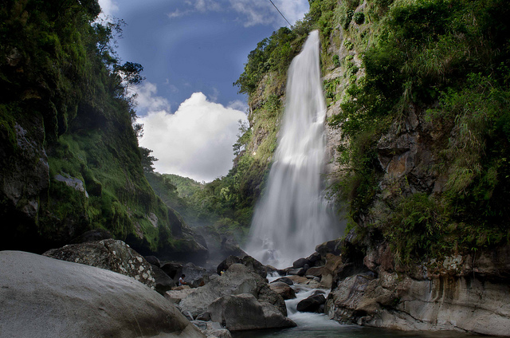

According to legend, Sagada was founded as an ili or village by Biag, a man from Bika in eastern Abra. The people from Bika were forced out of their ili by raiding headhunters. Biag's family resettled in Candon but when baptism or the giving of names was enforced, Biag's family chose to move back toward the mountains in search for a settlement. Along the way, he and his siblings decided to part ways. A brother, Balay, chose to return to Candon, a sister to Abra. Another brother settled along the upper Abra River. Biag pushed further to the east until he came to what is now Sagada.
Hanging Coffins at Echo Valley
Sagada’s mysterious Hanging Coffins at Echo Valley attest to the 2,000-year-old Igorot burial traditions that have fascinated the world. Pinewood coffins suspended with primitive wires and ropes along limestone cliffs act as vessels to heaven. The departed assume a fetal position, as it is believed that souls should leave the earth the same way they entered it. Little written records exist to document this bizarre practice; rather, knowledge is passed down through word of mouth by Applai elders
Lumiang-Sumaguing Cave Connection
Sumaguing Cave has the largest chambers of all the caves found in Sagada, thus earning its nickname the "Big Cave."
 King's Curtain, Sumaguing CaveOrange Picking at Rock Farm
Have as much orange as you want when you go pick your own oranges in this wonderful farm few kilometers away from the town.
St. Mary the Virgin Anglican Church
The Church Of St. Mary The Virgin in Sagada, also known as the Anglican Church in Poblacion is said to be the oldest church in Cordillera. It was originally built under the direction of Rev. John Staunton year 1904, under the American regime and became a parish year 1962.
Bokong, Bomod-Ok and Pongga Falls
A hike to Bokong Falls is one perfect ender to your adventure but if you prefer more challenging terrains then go extreme and see Bomod-Ok and Pongga Falls.
 Bomod-Ok Falls -- Highest Falls in Sagada